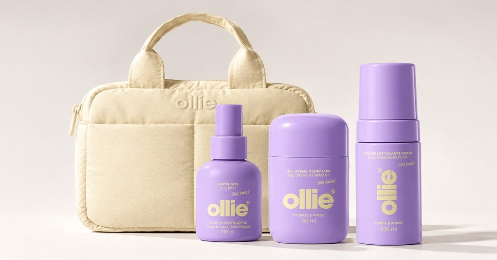

ACT Beauty разрабатывает сумку для туалетных принадлежностей для запуска Ollie
ACT Beauty разработала и изготовила сумку для туалетных принадлежностей для запуска Ollie, французского бренда по уходу за кожей, ориентированного на подростков и созданного для устранения выявленного пробела на рынке.
Туалетная сумка с мягкой стеганой обработкой в стиле пуффера имеет функциональный дизайн, построенный вокруг основного отсека, защищенного массивной застежкой-молнией, ручками для переноски и двумя дополнительными плоскими карманами спереди.
Металлическая застежка-молния, соответствующая цвету